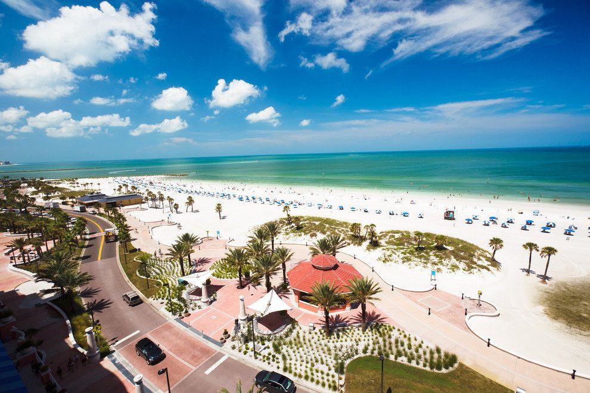
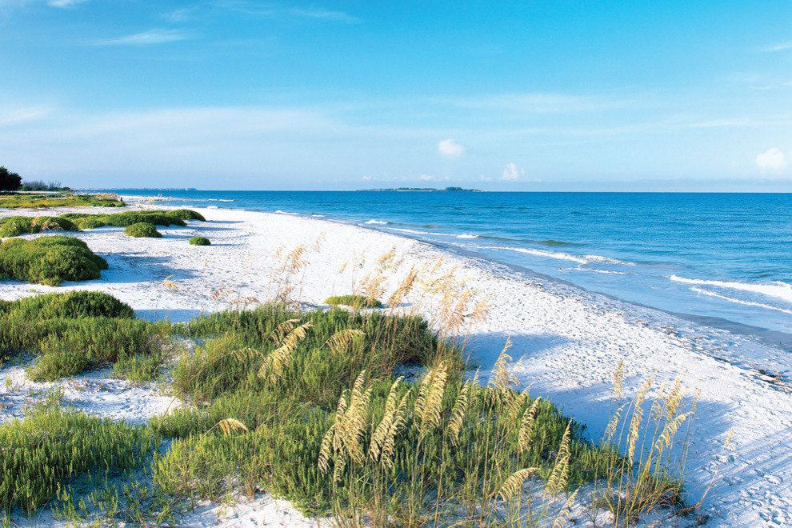
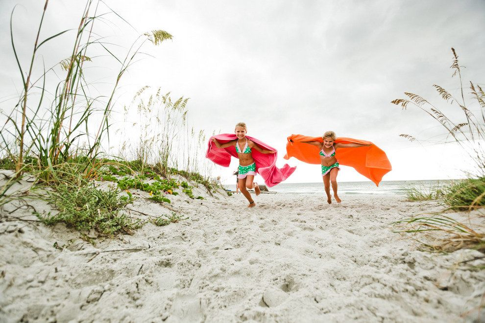

Beach Vibes Only!!
When it comes to Tampa Bay, picturesque scenery and an average of 361 days of sunshine each year create an ideal setting for those ready to explore and discover new treasures. Here you'll find some of the world's top-rated beaches, creating a year-round haven for outdoor enthusiasts. After experiencing an afternoon of kayaking the calm waters of Tampa Bay or discovering the unique wildlife along the Hillsborough River, relax with a picnic on just one of the many pristine, white-sand beaches the area has to offer. If you're lucky, you may even spot a manatee or dolphin from the shore line.


1
CLEARWATER BEACH
Clearwater Beach is a very popular and busy beach with a long list of "Best Beach" honors. In addition to meticulously groomed beaches and tons of beach amenities, Clearwater Beach offers many additional attractions. Fishing, dolphin-watching and leisure charters are available close-by. You can also visit the famous dolphin Winter who lives at the nearby Clearwater Aquarium.


2
FORT DE SOTO BEACH
The beach is wonderful and there is a calm lagoon protected by sand bars that provides a safe place for little ones to play. There is also a 7-mile paved trail for biking and walking. Included in the park's extensive list of amenities are two piers where visitors can fish without licenses, a dog park and beach area, and kayak and bike rentals.


3
BEN T. DAVIS BEACH
This is the closest beach to downtown Tampa and the locals' favorite tailgate spot. Davis offers ideal proximity to the airport for travelers who value efficiency. Tuesday evenings and Saturday mornings see the beach populated by local volleyball players. This is one of the best spots in town to watch the sunset and is located adjacent to the new Courtney Campbell Trail, a four-mile biking and pedestrian bridge.


4
INDIAN ROCKS BEACH
Indian Rocks Beach offers expansive white sand beaches with less emphasis on commercial development. A quiet, less crowed alternative to some of the more popular beaches. Public beach access is wonderful with over 20 entries to the sand but amenities are minimal with showers, restrooms and parking. The surrounding area features a mixture of residential and vacation rentals - you won't find any big chain hotels here. In spite of its laid-back atmosphere, there is still plenty to do here with skim boarding a popular pastime.